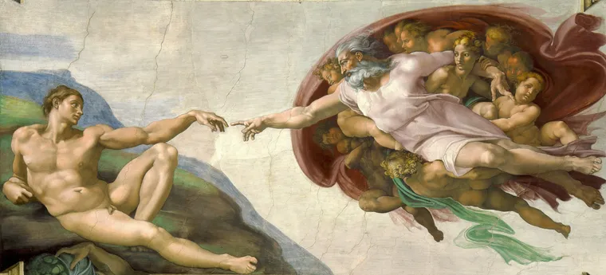
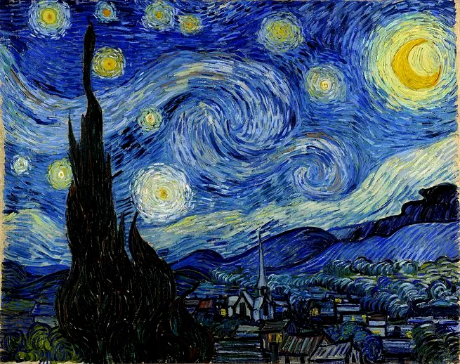
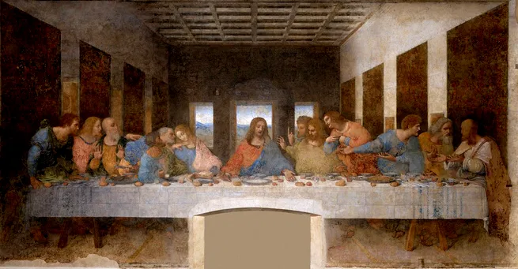

Sobre mim

Olá, sou Yan, estudante de Engenharia de Controle e Automação da UFMG e venho buscando me desenvolver nas áreas de programação e tecnologia. Fui estudante de Arquitetura e urbanismo durante 2 anos, mas atualmente estou indo para o 2º período de engenharia. Estou participando do processo de trainee na trilha de desenvolvimento da empresa iJunior, onde tenho adquirido conhecimentos e habilidades em áreas da programação como TypeScript, HTML e CSS.
Meus projetos

Afrescos da Capela Sistina: Este trabalho representa um dos maiores desafios técnicos e conceituais da minha carreira. Entre 1508 e 1541, fui incumbido de transformar o teto e a parede do altar da Capela Sistina. Embora eu me considere, antes de tudo, um escultor, aceitei o desafio de transpor o volume e a tridimensionalidade do mármore para o plano bidimensional do afresco.
A Noite Estrelada: Esta obra foi concebida durante o meu período no hospício de Saint-Paul-de-Mausole, em Saint-Rémy-de-Provence. Diferente de muitos dos meus trabalhos feitos en plein air (ao ar livre), esta composição é uma síntese entre a observação direta da vista da minha janela e as emoções e memórias que inundavam minha mente. Aqui, a noite não é escura; ela é vibrante, rítmica e cheia de luz.


A última ceia: Nesta obra, executada no refeitório do Convento de Santa Maria delle Grazie em Milão, meu objetivo foi transcender a representação estática de um rito religioso. Eu quis capturar o "movimento da alma" (i moti dell'animo). Escolhi o momento exato de maior tensão dramática: o segundo após Cristo pronunciar as palavras: "Um de vós me trairá".
Contato

Yan Martelleto de Mello

yanmartelleto2004@gmail.com

(+55) 31 98241-5354